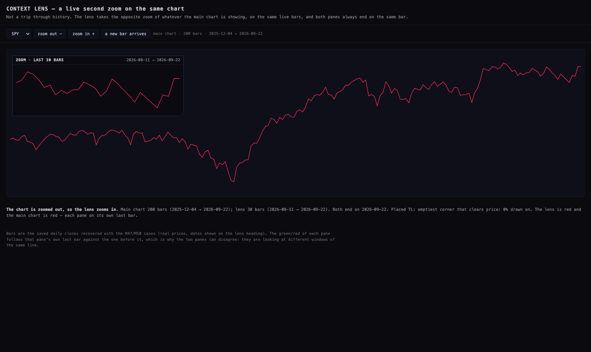
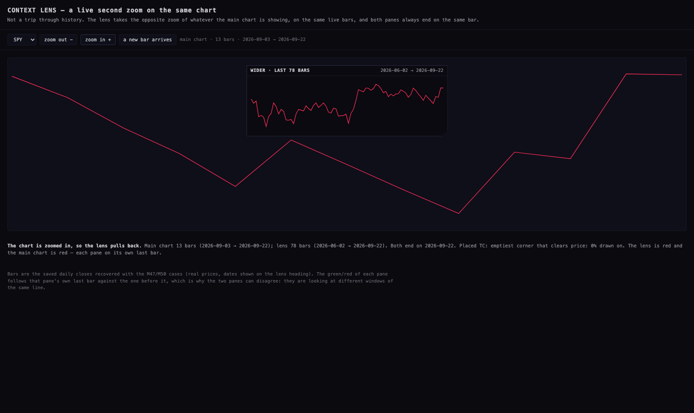
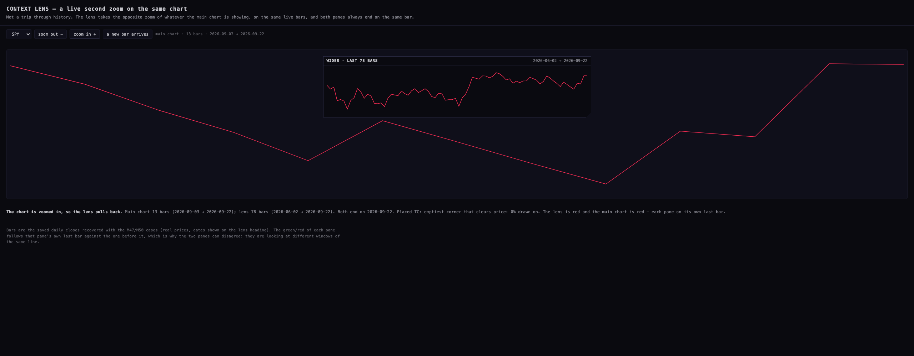

STATION CALM
Nothing reloads under your hand any more, and the Context Lens is a live second zoom
instead of a look back through history. 24 September 2026 · branch station/calm-20260924
· nothing deployed.
"Whatever refreshes happen on the station for the charts, they're kind of refreshing the YouTube feed when I'm scrolling. There's something weird going on that interferes with the experience a little bit."
"Seems to replay in the zoom level of history. I don't really care about that. I care about the zoom in current bars." · "It's just a view of the current bars with the opposite view, and another view of the one that we're in on the charts and what it is."
1 · What was reloading under your hand — proven, not guessed
The Station deck watches the server for a newer version of itself every three minutes, and reloads the page once it has seen two quiet minutes. It decided you were quiet by listening for the mouse, the keys, the wheel and touches on the deck's own page.
Every pane you actually touch — both YouTube feeds, the X pane, the charts — is a separate page inside a frame. A frame's mouse, wheel, touch and scroll never reach the page around it. So while you were scrolling a feed, the deck saw an empty desk: two quiet minutes passed, a deploy had landed, and it reloaded the whole page under your hand. That is the "something weird".
There was a second, smaller one. The feed re-reads its own list every two minutes. It put the same number of pixels back after the repaint — but when newer videos arrive at the top, the same number of pixels is a different video. The list slid under your eye.
Measured, before and after
A headless browser opens the real deck from a local copy, scrolls inside the YouTube pane for seven seconds while a new version of the deck appears on the server, and counts page reloads. Then newer videos arrive while the pointer sits in the list.
| What is measured | Before (what is live now, ed02f99) | After (this branch) |
|---|---|---|
| Page reloads while you were scrolling the feed | 1 | 0 |
| Reload once you stopped (the update still happens) | 0 — it had already gone | 1 |
| The feed refreshed while your pointer was in the list | yes — 62 tiles, and the video under the top edge changed from vid054 to vid056 | no — held at 60 tiles, still vid054 |
| When your hand left the list | — | the held refresh ran: the two new videos landed, and vid054 stayed under the top edge |
Harness facts, stated plainly: the clock is scaled so a three-minute check and a
two-minute quiet window fit inside a test run (the logic is untouched, the numbers it used are
printed in the run file); the feed rows are synthetic; nothing off this Mac was called; the browser
ran headless and was closed at the end. Files:
harness/station-calm-harness.mjs, harness/out/station-calm-before.json,
harness/out/station-calm-after.json.
2 · The fix
- Each pane says when it is in use. The two YouTube shells, the X shell and the chart shell now send one small message to the deck — at most once a second, carrying nothing but "in use" — on the same channel the X pane already uses to say it is live.
- The deck counts that as your hand. Its two quiet minutes are now measured across the deck and every pane together. Scrolling a feed keeps the whole Station awake.
- Chart and X reloads wait too. A chart frame going white and coming back is a reload to the eye, so it now waits for the same quiet. A change that arrives while you are working is remembered, not dropped — the moment you stop, it happens.
- The feed holds its own refresh while the pointer is in the list, and runs it as soon as the pointer leaves. Nothing is skipped.
- The feed keeps your place by video, not by pixels. It remembers which tile is under the top edge and puts that tile back there, even when newer videos have been added above it.
The calm is not a freeze: a quiet Station still updates itself, which the harness confirms (one reload, straight after the scrolling stopped).
3 · The Context Lens, rebuilt
There was never a piece of code called a "replay". What you were watching is the lens's old CONTEXT · FULL HISTORY view — a mode picked from a dropdown that left the current bars behind and showed the whole history instead. That mode is gone.
The lens now takes the opposite zoom of whatever the main chart is showing, on the same live bars:
| The main chart | The lens | Its label |
|---|---|---|
| zoomed out (more than 60 bars on screen) | zooms in: the last 30 bars | ZOOM · LAST 30 BARS + the dates |
| zoomed in (60 bars or fewer) | pulls back: six times the window on screen | WIDER · LAST n BARS + the dates |
| already showing everything there is | zooms in, because there is nothing wider | ZOOM · … |
| showing only a handful of bars | says there is no second view, rather than drawing nonsense | — |
Two rules hold in both modes: both panes always end on the same bar — the lens never shows a bar the main chart has not reached — and the wide view is a multiple of what is on screen, never the whole history. Where the lens sits and the shape it wears are M47's, unchanged: it takes the emptiest corner that clears the price line, it never covers the newest fifth of the chart, and it keeps the chamfered corner that points at what it is dodging.



The lens page is lens/LENS-LIVE.html. Its bars are the real saved daily
closes recovered with the M47/M50 cases, and the dates on the heading are those bars' own dates.
Each pane is green or red by its own last bar against the one before it, which is why the two can
disagree — they are different windows on the same line.
4 · What could be wrong
- The proof is a harness, not your desk. It runs the real pages with a scaled clock and synthetic feed rows. The mechanism is proven; the exact feel on the iMac after a real deploy is not.
- A pane that never reports is still invisible to the deck. The four shells the deck mounts
now report; the older standalone copies (
/pane-video,/pane-x,x-v1,video-v1) do not, because the deck does not mount them. - The hold is bounded by design. If you never stop touching the Station, the page update keeps waiting — the X pane already has a 30-minute ceiling for its own case; the page reload has no ceiling of its own beyond that.
- The lens numbers (30 bars, six times, the 60-bar switch) are a first choice, not a measured one. They are three numbers in one file and easy to change once you have looked at it.
- The lens page draws its own small chart rather than mounting a Station chart pane, so it proves the rule and the placement, not the Station's own drawing code.
5 · What I did not do
- Nothing was deployed, pushed or merged. No Vercel, Fly or Supabase command was run.
- The lens was not put into the live Station chart pane — this unit rebuilt the rule, the label and the two modes, and proved them on their own page. Mounting it in the chart shell is the next step and wants your eye first.
- No test browser was ever visible: every run was headless and closed itself.
- Alan's saved scenes, panes, feeds, watch list and Equalizer settings were not touched.
prototypes/indicator-lab/is byte-identical, and no other Hub room was changed.